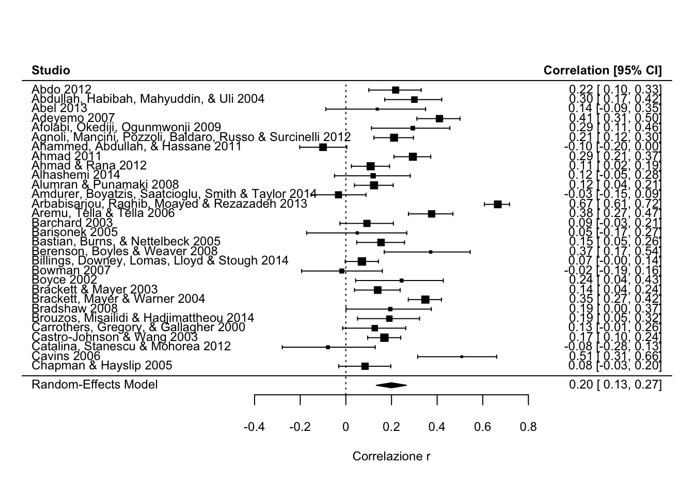
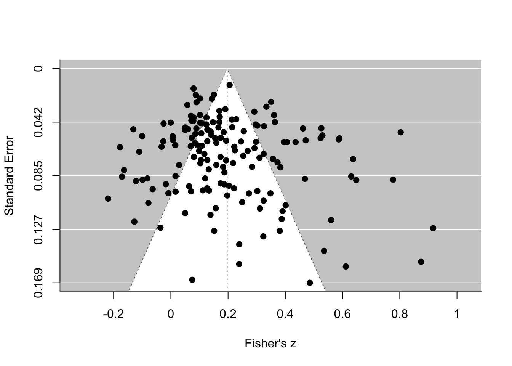
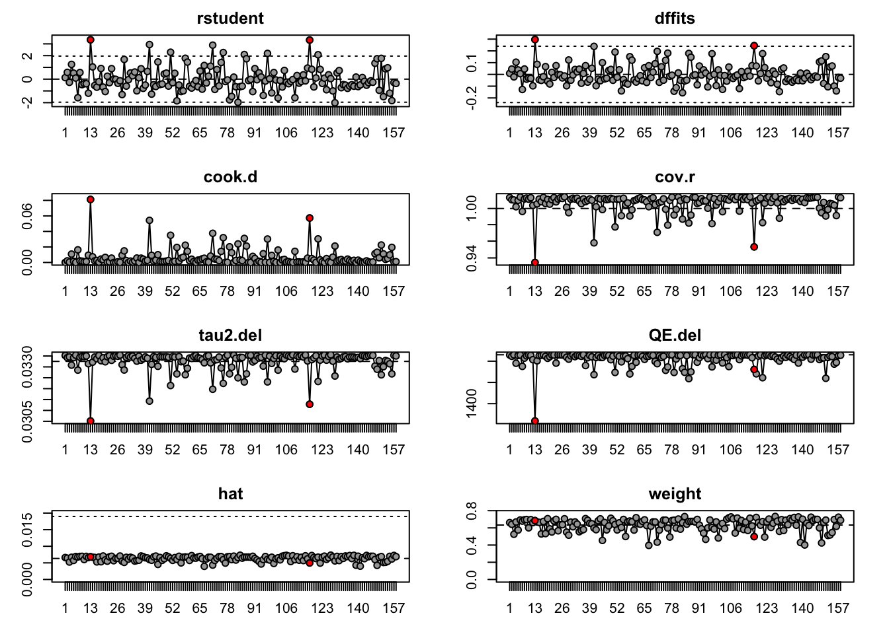

rm(list=ls()) # pulizia environment
# Installare i pacchetti solo se non sono già presenti
# install.packages("metafor")
# install.packages("psymetadata")
library(metafor)
library(psymetadata)Esercizio Meta-Analisi: Intelligenza emotiva e performance accademica
Obiettivo dell’esercizio
In questo esercizio useremo il dataset maccann2020, incluso nel pacchetto psymetadata.
Il dataset contiene risultati da 158 studi, per un totale di 1246 effect size, sulla relazione tra intelligenza emotiva e performance accademica.
Gli effect size sono riportati come correlazioni r.
L’obiettivo è imparare a:
caricare un dataset;
convertire correlazioni
rin Fisher’s z;aggregare più effect size provenienti dallo stesso studio;
stimare una meta-analisi random-effects;
interpretare output, eterogeneità e prediction interval;
valutare publication bias;
introdurre una meta-analisi multilivello.
1. Setup
2. Caricare il dataset
dat <- data.frame(maccann2020)Esploriamo il dataset.
str(dat)'data.frame': 1246 obs. of 20 variables:
$ study_id : num 1 2 3 5 6 7 7 8 8 8 ...
$ sample_id : num 1 2 3 5 6 7 7 8 8 8 ...
$ author : chr "Abdo" "Abdullah, Habibah, Mahyuddin, & Uli" "Abel" "Adeyemo" ...
$ pub_year : num 2012 2004 2013 2007 2009 ...
$ yi : num 0.218 0.3 0.138 0.41 0.293 ...
..- attr(*, "ni")= num [1:1246] 266 205 78 300 110 352 352 204 204 204 ...
..- attr(*, "measure")= chr "COR"
$ vi : num 0.00342 0.00406 0.0125 0.00231 0.00766 ...
$ pub_type : num 1 0 1 0 0 0 0 0 0 0 ...
$ n : num 266 205 78 300 110 352 352 204 204 204 ...
$ ed_level1 : num 1 1 1 2 2 0 0 2 2 2 ...
$ ed_level2 : num 1 1 1 2 2 0 0 2 2 2 ...
$ country : chr "USA" "Kuala Lumpur & Malaysia" "USA" "Nigeria" ...
$ perc_white : num 77 NA 0 NA NA NA NA NA NA NA ...
$ age : num 17.3 16.5 17.5 19.4 21.6 ...
$ perc_female : num 62 NA 63.3 53.3 41.8 ...
$ ei_construct : num 0 0 0 0 0 0 0 2 3 0 ...
$ ei_stream : num 3 1 3 2 3 3 3 1 1 1 ...
$ ei_measure : num 3.1 1.2 3.2 2.2 NA 3.2 3.2 1.1 1.1 1.1 ...
$ subject : num 0 0 0 6 0 1 2 0 0 0 ...
$ humanities : num 0 0 0 0 0 0 0 0 0 0 ...
$ achievement_type: num 0 0 0 0 0 0 0 0 0 0 ...head(dat) study_id sample_id author
1 1 1 Abdo
2 2 2 Abdullah, Habibah, Mahyuddin, & Uli
3 3 3 Abel
4 5 5 Adeyemo
5 6 6 Afolabi, Okediji, Ogunmwonji
6 7 7 Agnoli, Mancini, Pozzoli, Baldaro, Russo & Surcinelli
pub_year yi vi pub_type n ed_level1 ed_level2
1 2012 0.2183201 0.003422432 1 266 1 1
2 2004 0.3003224 0.004057587 0 205 1 1
3 2013 0.1376696 0.012499394 1 78 1 1
4 2007 0.4101488 0.002313895 0 300 2 2
5 2009 0.2933921 0.007662860 0 110 2 2
6 2012 0.1771894 0.002672916 0 352 0 0
country perc_white age perc_female ei_construct ei_stream
1 USA 77 17.28 62.00 0 3
2 Kuala Lumpur & Malaysia NA 16.50 NA 0 1
3 USA 0 17.47 63.30 0 3
4 Nigeria NA 19.40 53.33 0 2
5 Nigeria NA 21.55 41.80 0 3
6 Italy NA 9.35 53.41 0 3
ei_measure subject humanities achievement_type
1 3.1 0 0 0
2 1.2 0 0 0
3 3.2 0 0 0
4 2.2 6 0 0
5 NA 0 0 0
6 3.2 1 0 0Variabili importanti:
study_id: identificativo dello studio;author: autore/autori;pub_year: anno di pubblicazione;yi: effect size osservato, qui espresso come correlazioner;vi: varianza associata;n: numerosità campionaria;age: età media del campione;perc_female: percentuale di partecipanti donne;ei_stream: tipologia/misura dell’intelligenza emotiva.
3. Una riga = uno studio o un effect size?
nrow(dat)[1] 1246length(unique(dat$study_id))[1] 158
NoteNota metodologica
Anche qui molti studi contribuiscono con più di un effect size. Il modello ideale sarebbe un modello multilevel o multivariate.
In questa esercitazione aggregheremo gli effect size all’interno di ciascuno studio assumendo una correlazione rho = 0.50.
4. Conversione degli effect size
In questo dataset yi contiene correlazioni r.
Per stimare il modello useremo la trasformazione di Fisher, che converte r in Fisher’s z.
# Salviamo le correlazioni originali in una nuova colonna
# Così evitiamo confusione quando escalc creerà nuovi yi e vi
dat$ri <- dat$yiCon metafor, possiamo calcolare Fisher’s z e la sua varianza usando escalc().
dat_z <- escalc(
measure = "ZCOR",
ri = ri,
ni = n,
data = dat
)Controlliamo le nuove colonne yi e vi.
head(dat_z[, c("study_id", "author", "ri", "n", "yi", "vi")])
study_id author ri n
1 1 Abdo 0.2183201 266
2 2 Abdullah, Habibah, Mahyuddin, & Uli 0.3003224 205
3 3 Abel 0.1376696 78
4 5 Adeyemo 0.4101488 300
5 6 Afolabi, Okediji, Ogunmwonji 0.2933921 110
6 7 Agnoli, Mancini, Pozzoli, Baldaro, Russo & Surcinelli 0.1771894 352
yi vi
1 0.2219 0.0038
2 0.3099 0.0050
3 0.1385 0.0133
4 0.4358 0.0034
5 0.3023 0.0093
6 0.1791 0.0029
TipInterpretazione
Da questo punto in poi:
ri= correlazione originale;yi= correlazione trasformata in Fisher’s z;vi= varianza della Fisher’s z.
Il modello verrà stimato su Fisher’s z, ma alla fine trasformeremo la stima in correlazione r.
5. Aggregare gli effect size within-study
dat_agg <- aggregate(
dat_z,
cluster = study_id,
rho = 0.50
)Controlliamo quante righe rimangono dopo l’aggregazione.
nrow(dat_agg)[1] 158head(dat_agg)
study_id sample_id author
1 1 1 Abdo
2 2 2 Abdullah, Habibah, Mahyuddin, & Uli
3 3 3 Abel
4 5 5 Adeyemo
5 6 6 Afolabi, Okediji, Ogunmwonji
6 7 7 Agnoli, Mancini, Pozzoli, Baldaro, Russo & Surcinelli
pub_year yi vi pub_type n ed_level1 ed_level2
1 2012 0.2219 0.0038 1 266 1 1
2 2004 0.3099 0.0050 0 205 1 1
3 2013 0.1385 0.0133 1 78 1 1
4 2007 0.4358 0.0034 0 300 2 2
5 2009 0.3023 0.0093 0 110 2 2
6 2012 0.2145 0.0021 0 352 0 0
country perc_white age perc_female ei_construct ei_stream
1 USA 77 17.28 62.00 0 3
2 Kuala Lumpur & Malaysia NA 16.50 NA 0 1
3 USA 0 17.47 63.30 0 3
4 Nigeria NA 19.40 53.33 0 2
5 Nigeria NA 21.55 41.80 0 3
6 Italy NA 9.35 53.41 0 3
ei_measure subject humanities achievement_type ri
1 3.1 0.0 0 0 0.2183201
2 1.2 0.0 0 0 0.3003224
3 3.2 0.0 0 0 0.1376696
4 2.2 6.0 0 0 0.4101488
5 NA 0.0 0 0 0.2933921
6 3.2 1.5 0 0 0.2109721
WarningAttenzione
L’aggregazione è una scelta didattica. Aiuta a ottenere una sola riga per studio, ma non è il modello più informativo quando gli studi contribuiscono con molti effect size.
In un’analisi avanzata sarebbe opportuno considerare modelli multilevel con rma.mv().
6. Meta-analisi con rma()
Stimiamo un modello random-effects.
res <- rma(
yi = yi,
vi = vi,
method = "REML", # per effettuare una meta-analisi random-effects
data = dat_agg
)
res
Random-Effects Model (k = 158; tau^2 estimator: REML)
tau^2 (estimated amount of total heterogeneity): 0.0333 (SE = 0.0043)
tau (square root of estimated tau^2 value): 0.1824
I^2 (total heterogeneity / total variability): 93.04%
H^2 (total variability / sampling variability): 14.37
Test for Heterogeneity:
Q(df = 157) = 1515.0543, p-val < .0001
Model Results:
estimate se zval pval ci.lb ci.ub
0.1968 0.0156 12.5782 <.0001 0.1662 0.2275 ***
---
Signif. codes: 0 '***' 0.001 '**' 0.01 '*' 0.05 '.' 0.1 ' ' 1
NoteCosa stiamo stimando?
Stiamo stimando la correlazione media tra intelligenza emotiva e performance accademica.
Il modello lavora sulla scala Fisher’s z.
7. Interpretare l’output
res$b # effetto medio in Fisher's z [,1]
intrcpt 0.1968271res$se # errore standard[1] 0.01564823res$ci.lb # limite inferiore IC[1] 0.1661571res$ci.ub # limite superiore IC[1] 0.227497res$pval # p-value[1] 2.781802e-36res$tau2 # varianza tra studi[1] 0.0332516res$I2 # percentuale di variabilità dovuta a eterogeneità[1] 93.04281res$QE # test Q di eterogeneità[1] 1515.054res$QEp # p-value del test Q[1] 1.267746e-220Trasformiamo il risultato in correlazione r.
predict(res, transf = transf.ztor)
pred ci.lb ci.ub pi.lb pi.ub
0.1943 0.1646 0.2237 -0.1605 0.5047 Come leggere il risultato
La correlazione positiva (\(r = 0.19\)) indica che maggiore intelligenza emotiva tende ad associarsi ad una migliore performance accademica.
L’intervallo di fiducia indica l’incertezza sulla correlazione media, in questo caso è relativamente preciso (0.16, 0.22).
taueI²indicano quanta variabilità rimane tra gli studi.Il test Q valuta se l’eterogeneità osservata è maggiore di quanto atteso per solo errore di campionamento, in questo caso è significativo, quindi possiamo rifiutare l’ipotesi nulla di assenza di eterogeneità.
8. Fixed-effect vs random-effects
res_fe <- rma(
yi = yi,
vi = vi,
method = "EE", # per calcolare una meta-analisi Fixed-effect, come indicato
# dal creatore di metafor - W. Viechtbauer
data = dat_agg
)
res_fe
Equal-Effects Model (k = 158)
I^2 (total heterogeneity / total variability): 89.64%
H^2 (total variability / sampling variability): 9.65
Test for Heterogeneity:
Q(df = 157) = 1515.0543, p-val < .0001
Model Results:
estimate se zval pval ci.lb ci.ub
0.1771 0.0039 45.0035 <.0001 0.1694 0.1848 ***
---
Signif. codes: 0 '***' 0.001 '**' 0.01 '*' 0.05 '.' 0.1 ' ' 1# Random-effects
res
Random-Effects Model (k = 158; tau^2 estimator: REML)
tau^2 (estimated amount of total heterogeneity): 0.0333 (SE = 0.0043)
tau (square root of estimated tau^2 value): 0.1824
I^2 (total heterogeneity / total variability): 93.04%
H^2 (total variability / sampling variability): 14.37
Test for Heterogeneity:
Q(df = 157) = 1515.0543, p-val < .0001
Model Results:
estimate se zval pval ci.lb ci.ub
0.1968 0.0156 12.5782 <.0001 0.1662 0.2275 ***
---
Signif. codes: 0 '***' 0.001 '**' 0.01 '*' 0.05 '.' 0.1 ' ' 1Interpretazione
Il modello fixed-effect assume un unico effetto vero.
Il modello random-effects assume che l’effetto vero possa variare tra studi.
Per dati psicologici raccolti in contesti diversi, il modello random-effects è spesso più plausibile.
9. Forest plot
Con 158 studi, un forest plot completo può essere molto denso.
Per scopi didattici, visualizziamo un sottoinsieme di studi.
dat_plot <- dat_agg[1:30, ]
res_plot <- rma(
yi = yi,
vi = vi,
method = "REML",
data = dat_plot
)
forest(
res_plot,
slab = paste(dat_plot$author, dat_plot$pub_year),
transf = transf.ztor,
xlab = "Correlazione r",
header = "Studio"
)
Cosa osservare
Quanto variano le stime tra studi?
Quali studi hanno maggiore precisione?
L’effetto pooled rappresenta bene tutti gli studi?
10. Prediction interval
predict(res, transf = transf.ztor)
pred ci.lb ci.ub pi.lb pi.ub
0.1943 0.1646 0.2237 -0.1605 0.5047 Interpretazione
L’intervallo di fiducia descrive l’incertezza sull’effetto medio.
Il prediction interval descrive la variabilità attesa degli effetti veri in studi futuri simili.
Se il prediction interval è ampio, il campo è eterogeneo e l’effetto medio va interpretato con cautela.
11. Funnel plot e publication bias
funnel(
res,
yaxis = "sei",
xlab = "Fisher's z"
)
Egger-type regression test
regtest(
res,
model = "rma",
predictor = "sei"
)
Regression Test for Funnel Plot Asymmetry
Model: mixed-effects meta-regression model
Predictor: standard error
Test for Funnel Plot Asymmetry: z = 1.9834, p = 0.0473
Limit Estimate (as sei -> 0): b = 0.1273 (CI: 0.0522, 0.2024)Interpretazione cauta
L’Egger test valuta l’associazione tra dimensione dell’effetto e precisione dello studio.
Un risultato significativo può indicare asimmetria del funnel plot, ma non dimostra automaticamente publication bias.
Possibili spiegazioni alternative:
eterogeneità reale;
differenze metodologiche;
differenze nei campioni;
studi piccoli di qualità diversa;
12. Trim-and-fill
tf <- trimfill(res)
tf
Estimated number of missing studies on the left side: 0 (SE = 6.8485)
Random-Effects Model (k = 158; tau^2 estimator: REML)
tau^2 (estimated amount of total heterogeneity): 0.0333 (SE = 0.0043)
tau (square root of estimated tau^2 value): 0.1824
I^2 (total heterogeneity / total variability): 93.04%
H^2 (total variability / sampling variability): 14.37
Test for Heterogeneity:
Q(df = 157) = 1515.0543, p-val < .0001
Model Results:
estimate se zval pval ci.lb ci.ub
0.1968 0.0156 12.5782 <.0001 0.1662 0.2275 ***
---
Signif. codes: 0 '***' 0.001 '**' 0.01 '*' 0.05 '.' 0.1 ' ' 1predict(tf, transf = transf.ztor)
pred ci.lb ci.ub pi.lb pi.ub
0.1943 0.1646 0.2237 -0.1605 0.5047 funnel(
tf,
yaxis = "sei",
xlab = "Fisher's z"
)
WarningCautela
Il trim-and-fill non corregge magicamente il publication bias.
È una sensitivity analysis basata su assunzioni specifiche sul meccanismo di asimmetria.
13. Sensitivity analysis
Leave-one-out
loo <- leave1out(res)
head(loo)
estimate se zval pval ci.lb ci.ub Q Qp tau2 I2
-1 0.1967 0.0158 12.4836 0.0000 0.1658 0.2276 1514.5238 0.0000 0.0335 93.1085
-2 0.1961 0.0157 12.4644 0.0000 0.1653 0.2270 1511.4806 0.0000 0.0334 93.0962
-3 0.1972 0.0157 12.5323 0.0000 0.1663 0.2280 1514.9429 0.0000 0.0335 93.1158
-4 0.1952 0.0157 12.4606 0.0000 0.1645 0.2259 1495.0829 0.0000 0.0331 93.0197
-5 0.1962 0.0157 12.4760 0.0000 0.1654 0.2271 1513.3743 0.0000 0.0334 93.1061
-6 0.1967 0.0158 12.4821 0.0000 0.1658 0.2276 1514.3994 0.0000 0.0335 93.0905
H2
-1 14.5107
-2 14.4847
-3 14.5260
-4 14.3260
-5 14.5056
-6 14.4729 Influence diagnostics
inf <- influence(res)
plot(inf)
Domande interpretative
Ci sono studi molto influenti?
La stima media cambia molto rimuovendo uno studio alla volta?
Le conclusioni sembrano robuste?
14. Meta-regressione esplorativa
Come esempio, testiamo se l’età media del campione è associata alla dimensione dell’effetto.
dat_agg$age_c <- dat_agg$age - mean(dat_agg$age, na.rm = TRUE)
res_mod_age <- rma(
yi = yi,
vi = vi,
mods = ~ age_c,
data = dat_agg,
method = "REML"
)
res_mod_age
Mixed-Effects Model (k = 157; tau^2 estimator: REML)
tau^2 (estimated amount of residual heterogeneity): 0.0327 (SE = 0.0043)
tau (square root of estimated tau^2 value): 0.1808
I^2 (residual heterogeneity / unaccounted variability): 92.77%
H^2 (unaccounted variability / sampling variability): 13.83
R^2 (amount of heterogeneity accounted for): 2.53%
Test for Residual Heterogeneity:
QE(df = 155) = 1475.8384, p-val < .0001
Test of Moderators (coefficient 2):
QM(df = 1) = 4.5570, p-val = 0.0328
Model Results:
estimate se zval pval ci.lb ci.ub
intrcpt 0.1968 0.0156 12.6279 <.0001 0.1663 0.2274 ***
age_c -0.0063 0.0030 -2.1347 0.0328 -0.0121 -0.0005 *
---
Signif. codes: 0 '***' 0.001 '**' 0.01 '*' 0.05 '.' 0.1 ' ' 1Possiamo anche testare l’anno di pubblicazione.
dat_agg$pub_year_c <- dat_agg$pub_year - mean(dat_agg$pub_year, na.rm = TRUE)
res_mod_year <- rma(
yi = yi,
vi = vi,
mods = ~ pub_year_c,
data = dat_agg,
method = "REML"
)
res_mod_year
Mixed-Effects Model (k = 158; tau^2 estimator: REML)
tau^2 (estimated amount of residual heterogeneity): 0.0335 (SE = 0.0044)
tau (square root of estimated tau^2 value): 0.1830
I^2 (residual heterogeneity / unaccounted variability): 93.03%
H^2 (unaccounted variability / sampling variability): 14.35
R^2 (amount of heterogeneity accounted for): 0.00%
Test for Residual Heterogeneity:
QE(df = 156) = 1514.6987, p-val < .0001
Test of Moderators (coefficient 2):
QM(df = 1) = 0.1351, p-val = 0.7132
Model Results:
estimate se zval pval ci.lb ci.ub
intrcpt 0.1968 0.0157 12.5342 <.0001 0.1660 0.2276 ***
pub_year_c 0.0013 0.0035 0.3676 0.7132 -0.0055 0.0081
---
Signif. codes: 0 '***' 0.001 '**' 0.01 '*' 0.05 '.' 0.1 ' ' 1Interpretazione
Il coefficiente del moderatore indica quanto cambia l’effect size medio al variare del moderatore.
Per esempio:
age_c: cambiamento dell’effect size per un anno in più di età media; in questo caso l’effetto è limitato, ma significativo, quindi possiamo rifiutare l’ipotesi nulla di assenza di un effetto dell’età.pub_year_c: cambiamento dell’effect size per un anno in più di pubblicazione; in questo caso l’effetto è piccolo e non significativo.
WarningCautela
La meta-regressione è un’analisi a livello di studio. Non permette inferenze causali individuali e può essere poco potente se il numero di studi è limitato o se il moderatore è misurato con errore.
15. Modelli multilevel
In questo esercizio abbiamo aggregato i dati per avere una sola riga per studio.
In un’analisi più avanzata, potremmo usare un modello multilevel:
res_mv <- rma.mv(
yi = yi,
V = vi,
random = ~ 1 | study_id/sample_id,
method = "REML",
data = dat_z
)
res_mv
Multivariate Meta-Analysis Model (k = 1246; method: REML)
Variance Components:
estim sqrt nlvls fixed factor
sigma^2.1 0.0183 0.1353 158 no study_id
sigma^2.2 0.0158 0.1258 183 no study_id/sample_id
Test for Heterogeneity:
Q(df = 1245) = 13290.9897, p-val < .0001
Model Results:
estimate se zval pval ci.lb ci.ub
0.2011 0.0151 13.2919 <.0001 0.1715 0.2308 ***
---
Signif. codes: 0 '***' 0.001 '**' 0.01 '*' 0.05 '.' 0.1 ' ' 1
NotePerché non lo facciamo qui?
rma.mv() è più adatto alla struttura reale dei dati, ma richiede maggiore attenzione alla dipendenza tra effect size, alla struttura della varianza-covarianza e all’interpretazione dei livelli random.
Per una prima esercitazione, l’aggregazione è più semplice e didattica.
Take-home messages
Le correlazioni devono essere trasformate in Fisher’s z prima della meta-analisi.
escalc()aiuta a calcolare effect size e varianze.rma()permette di stimare rapidamente una meta-analisi.method = "REML"per calcolare una meta-analisi random-effects.method = "EE"per calcolare una meta-analisi fixed-effect.La stima finale può essere trasformata di nuovo in correlazione
rper l’interpretazione -predict(res, transf = transf.ztor))Se ci sono più effect size per studio, bisogna gestire la dipendenza (aggregazione vs modello multilivello)
Funnel plot, Egger test e trim-and-fill sono strumenti utili, ma non definitivi.
La meta-regressione va interpretata come analisi esplorativa, soprattutto se non pre-specificata.